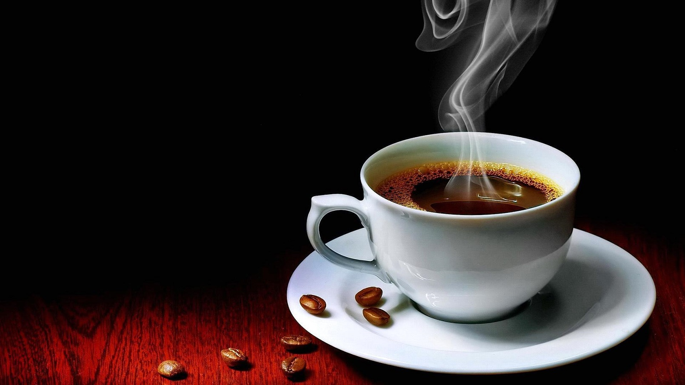
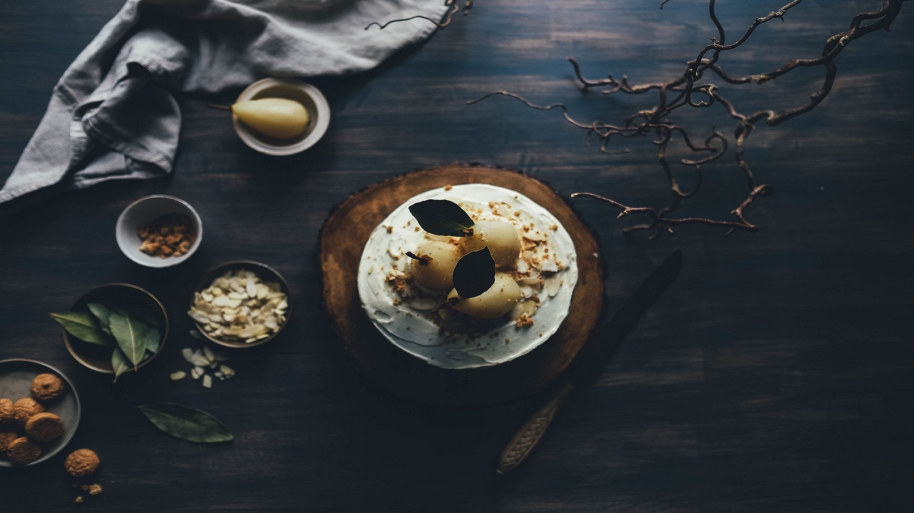
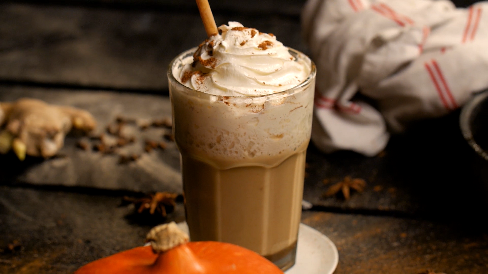

{% extends "base_layout/_base.html" %}
{% block body %}
    <!-- Carousel -->
    <div id="demo" class="carousel slide" data-bs-ride="carousel" style="background-color: rgb(49,49,49);" >

        <!-- Indicators/dots -->
        <div class="carousel-indicators">
            <button type="button" data-bs-target="#demo" data-bs-slide-to="0" class="active"></button>
            <button type="button" data-bs-target="#demo" data-bs-slide-to="1"></button>
            <button type="button" data-bs-target="#demo" data-bs-slide-to="2"></button>
        </div>

        <!-- The slideshow/carousel -->
        <div class="carousel-inner" >
            <div class="carousel-item active">
                <center>
                
                    </center>
            </div>
            <div class="carousel-item">
                <center>
                
                    </center>
            </div>
            <div class="carousel-item">
                <center>
                
                    </center>
            </div>
        </div>

        <!-- Left and right controls/icons -->
        <button class="carousel-control-prev" type="button" data-bs-target="#demo" data-bs-slide="prev">
            <span class="carousel-control-prev-icon"></span>
        </button>
        <button class="carousel-control-next" type="button" data-bs-target="#demo" data-bs-slide="next">
            <span class="carousel-control-next-icon"></span>
        </button>
    </div>
{% endblock %}